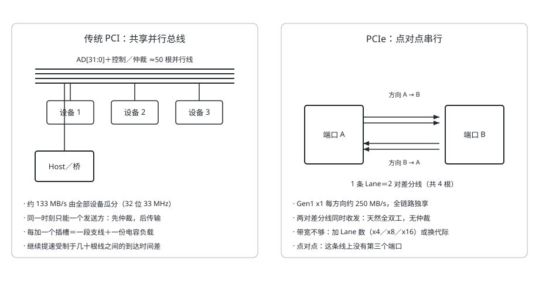
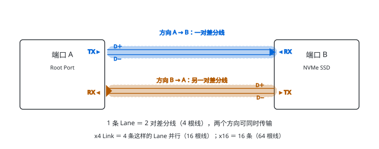
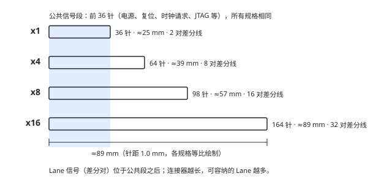
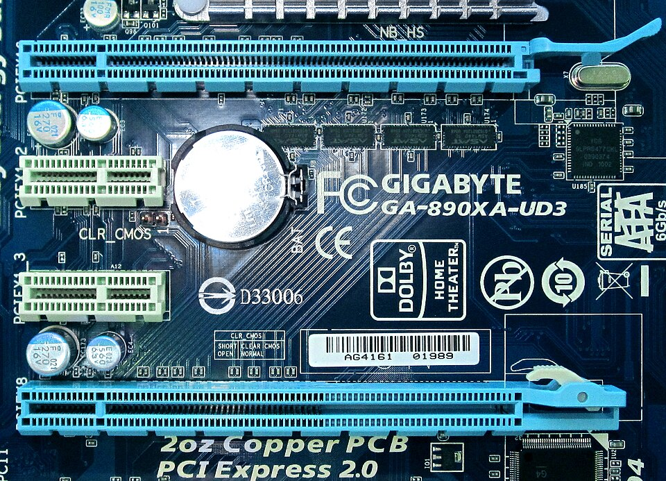
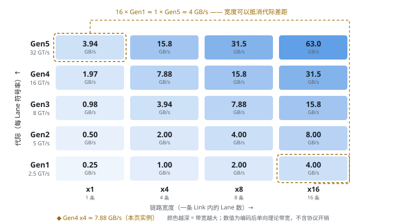
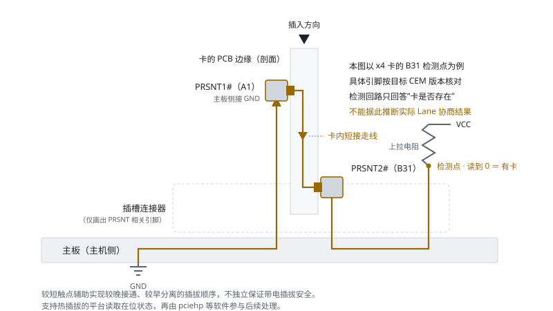

B-D.10.1 PCIe 基础与物理层：拓扑与物理链路¶
所属章节：第五部 B. 总线协议 > B-D.10 PCIe
难度：[B→I] | 预计阅读时间：30 分钟
本节导读¶
PCIe（Peripheral Component Interconnect Express）是主机与高速外设之间传输寄存器访问、内存数据和中断消息的点对点串行互连。显卡、采用 NVMe（Non-Volatile Memory Express）协议的固态硬盘（SSD）、网卡和现场可编程门阵列（FPGA）加速卡都可以作为 PCIe 设备接入系统。
本页先把最小系统缩到两个角色：主机侧的**根复合体（Root Complex，RC）**和作为设备的 NVMe SSD。RC 代表主机发起访问，SSD 作为端点（Endpoint）响应访问，或主动发起 DMA（Direct Memory Access，设备直接读写主机内存而不需要 CPU 逐笔执行数据搬运）；两者之间的一条 Link 由一条或多条 Lane 组成，每条 Lane 用两对差分线同时收发。数据 Lane 之外，链路还依赖参考时钟和复位等辅助信号。
本页的贯穿实例是教学构造，不是某块实板的实测记录：主机 RC 与 NVMe SSD 都支持 PCIe Gen4 x4，主板实际连接 4 条 Lane，中间没有 Switch。涉及带宽的数值是按编码规则计算的理论值，不是性能测量结果。

实物示例：Samsung 980 Pro 是支持 PCIe 4.0 的 M.2 NVMe SSD。它只用于对应本页主实例的设备形态，不是本页实测平台。摄影：D-Kuru／Wikimedia Commons，许可：CC BY-SA 4.0，来源页 · 许可。

本页回答的问题是：这条 Gen4 RC—NVMe 链路怎样从上电走到可以传输数据包的 L0（正常传输工作状态）？
阅读顺序就是链路建立的顺序：先确定谁与谁连接，再确认这条物理通道有多少 Lane；连线就绪后，还要满足参考时钟和复位条件，LTSSM 才能开始训练。进入 L0 后才能讨论理论带宽，并用 LnkCap／LnkSta 核对实际状态；设备重新插拔时，再沿存在检测、复位和训练重建链路。
本节覆盖：PCI 与 PCIe 的基本差异、RC／Root Port／Switch／Endpoint、Link 与 Lane、参考时钟与复位、链路训练状态机及重训、Gen1～Gen5 编码与理论带宽、链路状态的证据边界，以及热插拔的物理前提。
下一页沿同一条链路完成一次 Memory Read：事务与软件模型。
先建立最小模型：PCIe 为什么采用点对点串行链路¶
要理解这个设计，先看它抛弃了什么。传统 PCI 是一组共享的并行线路：32 根地址／数据线（AD[31:0]）加上字节使能、仲裁、控制信号共约 50 根，所有插槽电气并联在同一组线上。
这个结构有三个互相纠缠的天花板：
- 带宽被所有人分享。 PCI 32 位 33 MHz 整条总线只有约 133 MB/s，由总线上所有设备瓜分；想多传一些，先向仲裁器申请，等总线空出来。设备越多，每个设备分到的越少，延迟越不可控。
- 频率被线数和插槽数量卡住。 提速要求几十根信号线之间的到达时间差（skew）同时收窄， 到 66 MHz 时只剩几纳秒余量，所有走线必须按等长约束；更麻烦的是每个插槽都是一段支线加一份电容负载，插槽越多波形越差。PCI-X（PCI 的并行扩展版本）把并行总线频率推到 133 MHz 量级后，串扰、偏移和负载问题比带宽先到了极限。
- 引脚是昂贵资源。 约 50 根信号线意味着封装引脚、PCB 层数、连接器体积一起膨胀，而这组线绝大部分时间处于空闲状态，利用率极低。

PCIe 的回答分两步，顺序不能颠倒。
第一步：串行化。 把"32 根线各传 1 bit"换成"1 对差分线以高得多的速率依次传 bit"。线从几十根缩到一对，"多根线对齐"问题随之消失，只剩一对线内部的等长要求；8b/10b 编码保证数据流里有足够的电平跳变，接收端用 CDR（Clock Data Recovery，时钟数据恢复）直接从数据流中恢复时钟，连随路时钟线都省掉。单线速率因此可以做得远高于并行总线：Gen1 的 2.5 GT/s 换来扣除编码后每方向 250 MB/s，已经是整条 PCI 总线峰值的两倍，且这 250 MB/s 归这一个设备独享。代价是 20% 的编码开销， 这正是后面带宽表要算的那笔账。
第二步：点对点化。 串行差分链路本身只适合连接两个端点，设计顺势把"共享"整个废掉：一条 Link 的带宽只归两端使用，没有总线仲裁器，发送、接收各走各的差分对，天然全双工。一个 Root Port 的下游需要扩展多块设备时，可以使用 Switch；RC 也可以提供多个 Root Port，分别直接连接设备。跨端口传输要求数据包携带路由信息，于是循环冗余校验（CRC）、流控（信用机制）和排序规则都围绕包交换重新设计。
一句话记住本节："串行"解决线数、时钟偏移和引脚成本；"点对点"解决仲裁和带宽共享；点对点逼出了包交换，包交换又逼出了 RC／Switch／Endpoint 这套层级拓扑。 三者不是三个独立设计，而是同一次换代的连锁结果，拓扑和协议因此必须放在一起理解。
本页先处理拓扑与物理链路，下一页再处理数据包。
RC、Root Port、Switch 与 Endpoint：NVMe 数据能沿哪条路径走¶
点对点只说明一条 Link 有两个端口，还没有说明谁代表主机、谁执行设备功能，以及一块 RC 怎样连接多块设备。现在先把主实例的角色和路径固定下来。
下图给出本页实例和一个对照分支。读图时从 CPU 向下看：RC 提供主机入口，Root Port 引出实际 PCIe Link；左侧 NVMe 是主实例，右侧 Switch 用来扩展示例端口，不属于这笔 NVMe 访问的路径。
Root Complex（RC，根复合体）：主机与 PCIe 层级之间的接口集合。它把 CPU 的内存访问转换成 PCIe 事务，也让设备 DMA 能够访问主机内存。RC 不等于 CPU，也不等于某一个 Root Port。
Root Port：RC 引出一条 PCIe 层级的下行端口。软件配置模型中，Root Port 表现为 Type 1 Bridge Function（类型 1 桥功能），保存下游总线范围和资源窗口等信息。它不是只用于连接老式 PCI 的协议转换器。
Switch：由一个上行端口和若干下行端口的桥功能组合而成。上行口连接 Root Port 或上一级 Switch，按包里的地址或设备 ID 把事务层数据包（TLP）转发到正确的下行口。每个端口都是一条独立 Link，不做电气广播，也不把带宽平均分给下级。
Endpoint（EP，端点）：完成具体功能的设备，例如本例的 NVMe SSD。Endpoint 可以响应主机请求，也可以主动发起 DMA 或中断消息，但不为其他设备转发数据包。
包怎样凭地址或 ID 找到下一跳，即路由规则，归下一页"事务与软件模型"；本节只需要建立直觉：Root Port 和 Switch 端口在软件看来都是桥，桥上挂着哪些下级，就是 lspci -tv 显示的那棵树。
至于一笔完整 NVMe 读怎样继续涉及命令队列、DMA 和中断，留到下一页先拆清单笔 Memory Read 后再展开；队列和驱动实现细节归 B-D.10.3。
Switch 分支的边界
本例的 NVMe 访问只走 RC → Root Port A → NVMe SSD，不经过 Switch。但"不经过"不意味着 Switch 分支与带宽无关：若 FPGA 和网卡同时经 Switch 搬数据，它们各自独享自己到 Switch 下行口的 Link，却共享 Switch 上行口到 Root Port B 那一段， 跨段传输的带宽由上行口宽度封顶，还要经过 Switch 内部端口间的包调度。这是"点对点"的另一面：每段 Link 带宽专属，但过了交换就要排队。对照分支只用于说明多设备组网，不会在后面突然变成同一笔 NVMe 访问的中间节点。
Linux 的 lspci -tv 可以从软件侧显示这类父子关系。缩进和总线号属于枚举结果，B-D.10.2 会解释它们如何产生；物理图上有一个端口，并不表示操作系统已经完成枚举。
下面按实机输出格式构造一个教学示例，把上图的抽象角色映射到 Linux 对象。设备名直接写为 NVMe SSD，不携带具体厂商信息，也不把这段文字冒充实机证据：
读法与上图一一对应：0000:60 是这个层级所在的 Domain 和根总线，01.2 是根总线上的上游端口，[62] 是该端口下游分配到的总线号，最右侧 00.0 则是挂在下游总线上的 Endpoint。实际系统中还可能出现多个 Domain 和更长的桥接路径，因此不能只靠 60:01.2 的局部数字猜设备位置；完整寻址和多域选择归 B-D.10.2。
Lane 与 Link：这条物理路径有多宽¶
现在主实例已经固定为 RC→Root Port A→NVMe SSD，下一个实际问题是这条路径包含多少条并行传输通道，以及两个方向是否共享线路。这会直接决定插槽、布线和理论带宽。
Lane：一条 PCIe 双向传输通道，由两对差分信号线组成。一对把 A 的发送端连接到 B 的接收端，另一对把 B 的发送端连接到 A 的接收端。
Link：两个端口之间的一条逻辑链路，由一条或多条 Lane 聚合而成。x1、x4、x8、x16 表示 Link 当前使用的 Lane 数。
两者的关系可以压缩成一句话：Lane 是组成单位，Link 是聚合结果。 本页主实例中，Root Port A 与 NVMe SSD 两个端口之间是一条 Link，由 4 条 Lane 聚合，所以叫 x4；把 4 换成 1／8／16，就是 x1／x8／x16。
注意 Link 连接的是"相邻两个端口"：主实例没有 Switch，整条路径恰好只有这一条 Link；若中间经过 Switch，一次访问要穿过多段 Link，每段各有自己的宽度、独立训练。
下图把一条 Lane 的两对差分线展开。每个箭头旁的一对线表示一对差分信号，不是两根独立的数据通道。

差分信号用两根导体传输一对相反变化，接收端取两者之差，从而抑制两根线上共同出现的噪声。它的工作原理和信号完整性细节见 B-F.16.1；本页只需要记住：一对差分线负责一个方向，一条 Lane 需要两对，因此 x4 是 8 对差分线。
发送和接收通道彼此独立，所以 PCIe 标称带宽按每个方向分别计算。x4 并不是把 4 条 Lane 分成 2 条发送、2 条接收，而是 4 条 Lane 都能同时收发。
链路宽度也不是对两个整数求“最大公约数”。初始训练时，两端在规范允许的宽度、各自能力和主板实际连线约束下建立可用 Link；已经工作的 Link 还可能在 Recovery 中调整宽度。x16 插槽外观、Root Port 能力、Endpoint 能力和实际焊接 Lane 数是四个不同事实。
连接器规格长度随可容纳的 Lane 数增加。 卡边缘连接器所有规格共用 1.0 mm 针距和同一段前端公共信号（电源、复位、时钟请求、JTAG 等，共 36 针），x1／x4／x8／x16 的差别就是连接器向后延长了多长：

x1／x4／x8／x16 按真实毫米长度等比绘制；所有规格共用前 36 针公共信号段（图中高亮）。机械长度决定“能插什么槽”，电气 Lane 数决定“跑多宽”，两者可以不一致。本图为本页自绘示意图。
这张等比图给出两个直觉：
- 短卡能插长槽：x1 卡只用前 36 针，插入 x16 槽时信号一一对齐前段，机械与电气都合法；
- 长槽不等于宽链路：x16 长度的插槽只布了 x4 走线的主板很常见，“壳长”只是可能性上限，“瓤宽”要查原理图和链路状态。

实物照片帮助识别插槽的机械长度，但不能据此判断实际接线宽度。摄影：Csendesmark，作者已释放为公有领域，来源与作者信息。

⚠️ 机械兼容与电气宽度是两个独立判断，不能互相替代：
- 短卡插长槽：机械合法，电气上按卡的 Lane 数工作；
- 长卡插短槽：封闭式槽尾通常插不进去；开放式槽尾插进去也只按插槽实际布线宽度工作；
- 任何方向都不能只凭插槽长度推断实际带宽，以 LnkSta 读数为准。
REFCLK 与 PERST#：插好设备后为什么仍不能训练¶
现在主实例已经有 RC、Root Port、NVMe SSD 和 4 条 Lane，但“线路接好”仍不代表两端可以立即交换训练序列。硬件还要回答两个不同问题：按什么时间基准发送，以及设备是否仍被保持在复位状态。
REFCLK：PCIe 常用的 100 MHz 参考时钟，提供计算发送时刻和接收时序的基准，不是数据线上的实际速率。物理层收发器（PHY）中的 PLL（Phase-Locked Loop，锁相环）等电路以参考时钟为基础生成内部高速时钟，再支持 Gen4 的目标符号率。参考时钟不满足要求时，后续高速训练就缺少可靠前提。
不同系统可以采用共同参考时钟，也可以采用满足规范条件的独立参考时钟，不能把所有板卡都画成共用同一颗晶振。需要核对的是实际时钟来源、频率、稳定性和设备手册要求，而不只是“有没有 100 MHz 这个数字”。
PERST#：PCIe 的基本复位信号，
#表示低有效。PERST#=0时设备保持复位，不应开始正常链路训练；PERST#=1时表示复位已经释放。所谓“释放复位”是让信号在满足手册条件的时刻从 0 变为 1，不是向设备发送一条软件命令。
把两个条件分开看，上电时的预期行为就清楚了：
| 电源 | REFCLK | PERST# | 当前能得出的结论 |
|---|---|---|---|
| 正常 | 正常 | 0 | 设备仍保持复位，不能据此判断 PCIe 链路好坏 |
| 正常 | 异常 | 1 | 复位虽已释放，但时钟前提不满足，训练仍可能失败 |
| 正常 | 正常 | 0→1 | 满足设备手册规定的时序后，两端才进入 Detect |
这三个条件的价值不在台式机主板上，而在板级上电调试（bring-up）现场。 台式机的上电时序由电源时序控制器一气呵成，确实"自然而然"；嵌入式板上，时钟使能和 PERST# 往往就是主控的寄存器位或通用输入输出引脚（GPIO），"先电源、后时钟、最后释放复位"这个顺序要由固件或驱动按序排出，设备树中的 clocks／reset-gpios 描述就是这个交界面在配置层的落点。lspci 看不到 SSD 时，NVMe 驱动尚未开始接管设备，第一嫌疑是时钟没使能、复位没释放或释放过早，而不是让 NVMe 驱动反复重试。
本页教学实例的正常上电时序如下。波形把参考时钟画成主板同时供给两端，只是其中一种形态，不排除其他合规的独立时钟设计；T_PVPERL 取 PCIe 卡机电规范（CEM）下限 100 ms，具体数值以设备手册为准。
上电时序示意：电源达到规范值后 REFCLK 先稳定，经 T_PVPERL（≥100 ms，CEM 规范下限）后 PERST# 由 0 变 1 释放复位，两端随后进入 Detect。波形为示意，时间与频率不按真实比例绘制。
因此，本节的产出只是允许开始训练，还不是链路已就绪（Link Up）。PERST# 的准确时序不能用一段通用延迟代替手册要求；下一步由 LTSSM 回答两端怎样真正进入 L0。
LTSSM：时钟和复位就绪后，两端怎样进入 L0¶
参考时钟和 PERST# 只提供开始训练的条件，并没有替两端建立同步。接下来的任务是发现对端、确定 Link／Lane 关系、先建立 2.5 GT/s 链路，再通过 Recovery 进入 Gen4 目标速率。
LTSSM（Link Training and Status State Machine）：PCIe 端口用来发现对端、建立同步、配置 Link、进入工作状态以及处理重训的硬件状态机。
LTSSM 的状态转换和训练序列由两端硬件执行。软件可以通过链路控制寄存器设置目标速率、请求重训或禁用链路，具体支持情况取决于端口和平台；这些操作只是配置和触发，不是软件逐拍执行 Detect、Polling、Configuration 或 Recovery。
软件通常通过 LnkSta 的速率、宽度和错误日志观察训练结果。PCIe 没有跨厂商统一的完整 LTSSM 状态读取接口，但具体控制器可能提供厂商专用调试寄存器。初始训练发生在初次枚举之前，运行期间也可能重训；所需时间随平台、复位和训练过程变化，不能用统一的毫秒数概括。
下面把正常路径做成可交互的：点击状态查看机制说明与排查线索，或点"播放训练流程"看一遍完整的训练过程（省略 L0s／L1、Disabled、Hot Reset、Loopback 等状态）。
交互页之外，四个状态各记一句话就够：
- Detect 探测对端接收器是否存在，卡在这里先查插卡、供电、连接器、复位和端口使能；
- Polling 交换 TS1／TS2 完成位锁定与符号锁定，固定以 2.5 GT/s 起步，不在这里一步到位；
- Configuration 确定 Link／Lane 编号和初始宽度，物理连接从此成为一条可识别的 Link，但主机还不知道设备功能，也未分配地址窗口；
- Recovery 承担变速、均衡、重训与错误恢复， 进入它不等于降速，成功回到 L0 也不等于故障消失，Gen4 训练失败的定位方法归 B-D.10.4。
本例的正常结果可以概括为两段：
随后数据链路层完成初始化，才可以正常交换事务数据包和链路控制包。
到这一步仍不能说“SSD 已经可以供文件系统使用”，因为枚举、资源分配、驱动加载和块设备初始化还在后面。
Gen1～Gen5 编码与理论带宽：进入 L0 后能传多快¶
L0 只说明链路已经可以传包，接下来自然要估算它的传输能力。
带宽由两个互相独立的维度相乘得到：每条 Lane 有多快（Gen，代际）× 有几条 Lane（x几，链路宽度）。
先把两个维度分清¶
- Gen（代际）：PCIe 标准的版本号，规定每条 Lane 的符号率和编码方式。 它不是"Lane 的型号"，同一条 Link 上所有 Lane 使用相同速率。两端共同支持的最高代际只是上限，实际结果还受目标配置、平台布线和训练过程限制。
- x几（链路宽度）：一条 Link 由几条 Lane 并行组成，见上节（x1/x4/x8/x16）。
两个维度可以按平台和设备实现组合：Gen3 x1 与 Gen3 x16 是同代不同宽；甚至 Gen1 x16（约 4.0 GB/s）还略快于 Gen5 x1（约 3.94 GB/s），增加 Lane 数可以抵消代际差距。所以问"这条链路多快"必须同时给出两个数：什么 Gen、x几。

符号率与编码：GT/s 为什么不等于 Gbit/s¶
GT/s 是每秒发送到线上的符号数。NRZ（Non-Return-to-Zero，二电平传输）方式下每个符号是电压的一个电平状态，携带 1 个线比特，但线比特不等于数据比特：接收端靠电平跳变恢复时钟（CDR），且线路要求 0/1 数量大致平衡，所以数据 bit 必须裹上一层"包装"才能上线，这层包装就是编码开销。
- 8b/10b（Gen1/2）：每 8 bit 数据配 2 bit 包装，有效载荷 80%，开销 20%
- 128b/130b（Gen3～5）：每 128 bit 数据只配 2 bit 包装，有效载荷约 98.5%
下表按每 Lane、单向列出，只扣除编码开销，按十进制字节换算，不扣除事务层包头、数据链路控制包、流控、空闲有序集和设备实现等额外开销。链路总带宽＝查表值 × Lane 数：
| 世代 | 每 Lane 符号率 | 编码 | 编码后每 Lane 单向 | 若 x4，整链路单向 |
|---|---|---|---|---|
| Gen1 | 2.5 GT/s | 8b/10b | 约 250 MB/s | 约 1.0 GB/s |
| Gen2 | 5.0 GT/s | 8b/10b | 约 500 MB/s | 约 2.0 GB/s |
| Gen3 | 8.0 GT/s | 128b/130b | 约 985 MB/s | 约 3.94 GB/s |
| Gen4 | 16.0 GT/s | 128b/130b | 约 1.969 GB/s | 约 7.88 GB/s |
| Gen5 | 32.0 GT/s | 128b/130b | 约 3.938 GB/s | 约 15.75 GB/s |
Gen3 值得单独计算一次，体会编码带来的差别：
8.0 GT/s × 128/130 = 7.8769 Gbit/s ← 符号率先扣一次编码
7.8769 ÷ 8 = 0.9846 GB/s（每 Lane、单向）
0.9846 × 4 = 3.9385 GB/s（x4、单向） ← 再乘 Lane 数
Gen3 的符号率只比 Gen2 高 60%，编码后理论带宽却接近翻倍， 差别几乎全来自 8b/10b 换成 128b/130b 省下的包装。
Gen4/5 沿用 128b/130b 与 NRZ，继续提高符号率；它们的链路均衡和信道要求不能从这张表推导出来。
本页实例若最终稳定在 Gen4 x4，按上表即约 7.88 GB/s，每个方向分别计算。
它不是 NVMe 顺序读写保证值，实际吞吐还受协议开销、队列、设备介质和主机实现影响。
LnkCap 与 LnkSta：软件怎样核对实际速率和宽度¶
前面的带宽计算只是理论推演。要确认本页实例实际是否工作在 Gen4 x4，还需要读取训练留下的软件可见结果，而不是由插槽外观或 SSD 标称速度反推。
训练完成后，软件可以读取 PCIe Capability（能力寄存器区）中的链路字段：
- LnkCap（Link Capabilities）：被读取的那个 Function 所在端口声明的最大链路速率与宽度等能力， 它描述的是'这一端'，不是整条 Link；
- LnkSta（Link Status）：当前读取时，这条 Link 的协商速率和宽度等状态。
因此，本例 SSD 显示 Gen4 x4 能力，只能说明 SSD 这一端的能力。要判断实际 Link，还要同时考虑 Root Port 的能力、主板连线、目标速率配置和当前电源管理状态。
具体读法（本例 SSD 位于 0000:01:00.0，其上游 Root Port 为 0000:00:01.0；写出完整 Domain 可以避免多域误选）：
lspci -vv -s 0000:01:00.0 | grep -E "LnkCap:|LnkSta:" # SSD 端
lspci -vv -s 0000:00:01.0 | grep -E "LnkCap:|LnkSta:" # Root Port 端
下面只是假设两端都工作在 Gen4 x4 的教学示意，不是实测输出：
核对顺序：
- 在明确的负载和电源状态下读取链路两端。若
Train=1，说明当前仍在训练，先等它清零再比较。 - 分别比较每一端的 LnkSta 与 LnkCap。相等只表示当前读取值与本端能力一致，不能排除历史重训或链路错误。
- 出现差异时读取对端能力。协商结果不会超过两端共同支持的上限；哪一端上限更低，就把它列入瓶颈候选。
- 共同上限之内仍偏低，再查 LnkCtl2 的 Target Link Speed、AER 错误记录和 dmesg 日志。
LnkSta 低于本端 LnkCap 是一个需要继续调查的现象，不是“训练失败”的单一判据。可能原因包括：
- 上游 Root Port 只支持较低速率或较少 Lane；
- 插槽或 SoC 实际只连接了部分 Lane；
- 固件或链路控制寄存器设置了较低目标；
- 平台为了功耗管理临时调整了链路状态；
- 高速训练或链路稳定性确实存在问题。
基础检查应先读取链路两端，并在明确的工作负载和电源状态下比较能力与现状。只有再结合目标速率、训练状态、日志和 AER（Advanced Error Reporting，高级错误报告）等证据，才能继续归因；完整方法归 B-D.10.4。
⚠️
lspci输出的downgraded也是工具根据单端能力与当前状态所作的标记，不等于它知道平台为什么形成当前状态。
PRSNT# 与热插拔：设备重新插入后怎样重建链路¶
前面只完成了本页实例的一次上电训练。如果设备被拔出再插入，系统先要知道物理对象发生了变化，随后才可能重新执行复位、训练和枚举。存在检测因此是链路生命周期的入口，而不是一个孤立的信号名词。
PRSNT# 怎样感知“卡在位”¶
在支持这种检测方式的 CEM 插槽上，PRSNT1# 与 PRSNT2# 构成检测回路。卡内走线把两端联系起来，主板一侧提供接地和上拉检测点；卡插入后，回路状态改变，主机据此判断卡是否存在。具体引脚位置和检测条件应按目标 CEM 版本与设备形态核对，不能用这张示意图推断当前 Lane 数。

图中的重点只有“回路是否成立”。部分形态的触点较短，用于让检测触点较晚接通、较早分离，辅助控制插拔顺序；它不是消除电弧或保证带电插拔安全的独立措施。
插入之后谁干什么¶
| 阶段 | 谁 | 干什么 |
|---|---|---|
| 在位感知 | 插槽与检测硬件 | 检测回路或平台支持的其他检测方式发现设备变化 |
| 槽电源 | pciehp 与平台电源控制 | 在插槽支持时，按 Slot Control 和硬件能力控制上电／断电 |
| 链路重建 | 两端硬件 | 在电源、时钟和复位条件满足后，由 LTSSM 重新训练 |
| 重新枚举 | pciehp 与内核 | 在链路可用且满足规定等待条件后扫描设备并恢复驱动绑定 |
链路重建仍由硬件执行，软件负责提供电源、时钟、复位和枚举条件。等待时间不能只写一个通用的“100 ms”，必须区分电源稳定、时钟稳定、训练完成和允许首次配置访问各自的规范要求。
边界¶
PRSNT# 只是在位检测输入，不等于热插拔能力。受控热插拔还需要平台提供相应检测、电源控制、固件和操作系统配合。没有这些能力的平台发生意外移除时，不能承诺仅靠重新训练就能自动恢复。
重新枚举归 B-D.10.2，驱动移除与异常恢复归 B-D.10.3，实际操作和日志归 B-D.10.4。
本节总结¶
本页沿一条 Gen4 RC—NVMe 链路建立了最小物理模型：RC 通过 Root Port 引出 Link，Endpoint 完成设备功能，Switch 负责扩展端口并转发数据包；每条 Lane 用两对差分线实现全双工。链路先满足时钟和复位前提，再以 2.5 GT/s 完成初始训练，经 Recovery 进入目标速率，不能把这些阶段混成“上电即 Gen4”。
LnkCap 和 LnkSta 是观察训练结果的入口，不是单独的故障判决书。后续阅读先沿这条已经可用的链路完成一次 Memory Read，再进入枚举，理解软件怎样发现和分配设备资源。
速查表¶
| 对象 | 本页应记住的含义 |
|---|---|
| RC 与 Root Port | RC 是主机接口集合，Root Port 是引出 PCIe 层级的下行端口 |
| Type 1 Bridge | Root Port 和 Switch Port 都可采用这种配置模型，不等于只连接传统 PCI |
| Endpoint | 完成具体功能，不为其他设备转发数据包 |
| Lane 与 Link | 一条 Lane 是两对差分线；x4 Link 聚合 4 条 Lane |
| REFCLK／PERST# | 100 MHz 参考时钟不是数据速率；PERST#=0 保持复位，=1 释放复位 |
| LTSSM | 先以 2.5 GT/s 建立 Link，再经 Recovery 变速或重训 |
| Gen3／Gen4 | 同用 128b/130b；Gen4 提高符号率，编码规则没有换代 |
| LnkCap／LnkSta | 单端声明能力／当前链路状态，差异本身不等于训练失败 |
| 热插拔 | 存在检测只是输入，完整支持还需要平台、操作系统和驱动 |
本节自查¶
Q1. Root Port、Switch 和 Endpoint 在一棵 PCIe 树中分别负责什么？
Root Port 从 RC 引出一条下行层级，Switch 扩展上行和下行端口，Endpoint 完成 NVMe、网卡等具体功能。Root Port 和 Switch Port 都可以在软件配置模型中表现为 Type 1 Bridge Function；Endpoint 不负责为其他设备转发数据包。
Q2. 一条 Gen4 x4 Link 有多少对差分线，为什么两个方向可以同时传输？
x4 有 4 条 Lane，每条 Lane 两对差分线，所以共有 8 对。每条 Lane 的一对用于 A→B，另一对用于 B→A，方向互不占用对方的物理通道，因此可以全双工。
Q3. 为什么“Gen4 链路在 Polling 中直接谈妥 16 GT/s”不是本页采用的正常训练模型？
初始 Link 先在 Polling／Configuration 中以 2.5 GT/s 建立基本同步和逻辑关系。Gen3 及以上的目标速率通过 Recovery 中的变速过程进入，Gen4 还涉及相应均衡训练。
Q4. SSD 的 LnkCap 是 Gen4 x4，而 LnkSta 是 Gen3 x2，能否直接判定 SSD 训练失败？
不能。它只说明当前状态低于 SSD 单端声明的能力。还要读取 Root Port 能力和状态，核对实际 Lane 连线、目标速率、负载与电源状态，再结合训练日志和 AER 等证据判断原因。
Q5. Gen3 x4 的编码后理论带宽怎样计算，为什么不能把它当成 NVMe 实测吞吐？
每 Lane 为 8.0 × 128/130 ÷ 8 ≈ 0.9846 GB/s，x4 约为 3.938 GB/s，每个方向分别计算。这个值只扣除编码开销，没有扣除包协议、流控和设备实现成本，也没有测量 SSD 介质和队列行为。
Q6. 为什么 REFCLK 不是数据线上的速率，PERST#=1 又意味着什么？
REFCLK 是计算发送时刻和接收时序的参考基准，内部电路以它生成高速工作时钟，100 MHz 不是 Gen4 的线上符号率。PERST#=1 表示低有效复位已经释放；在满足设备手册时序后，两端才可以进入 Detect，而不是已经训练到 L0。
沿同一条已经训练的链路继续阅读：事务与软件模型：一次 Memory Read 怎样完成。